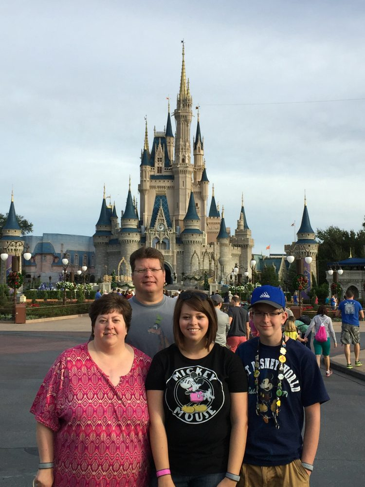
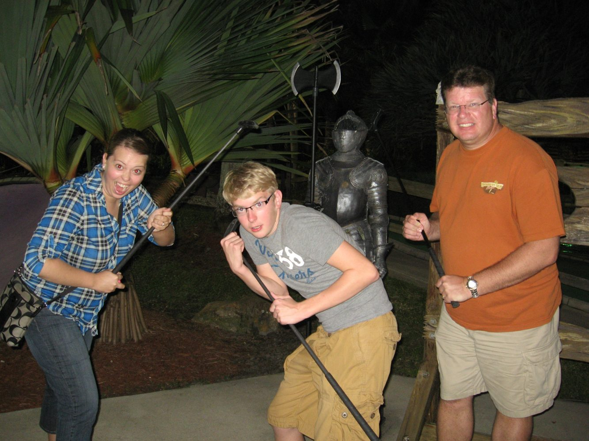
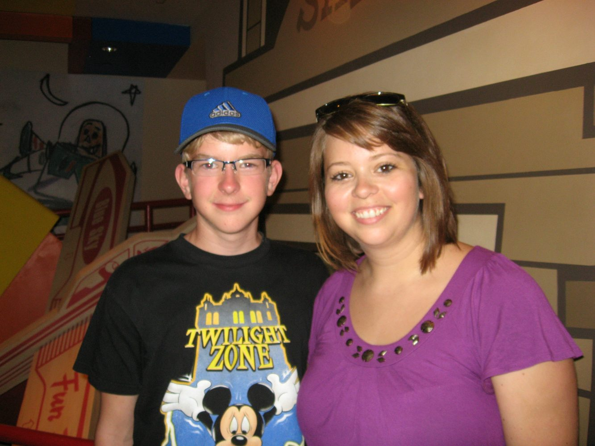
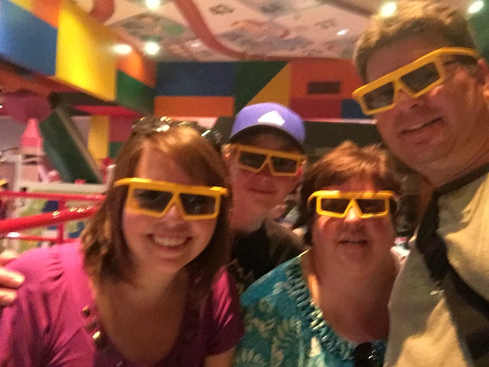
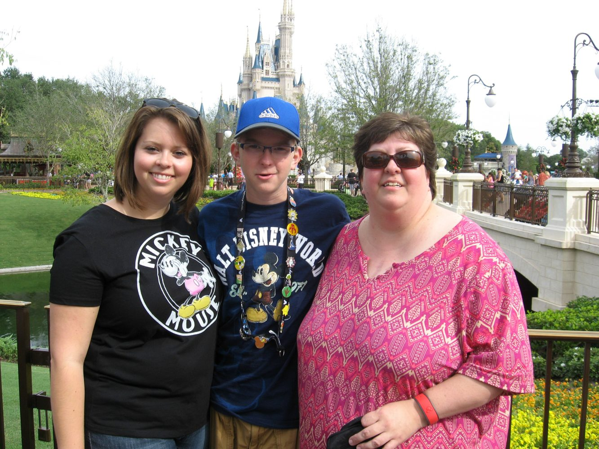
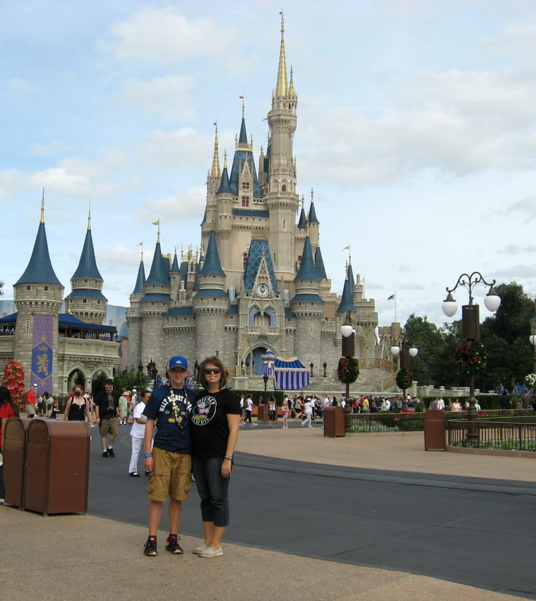
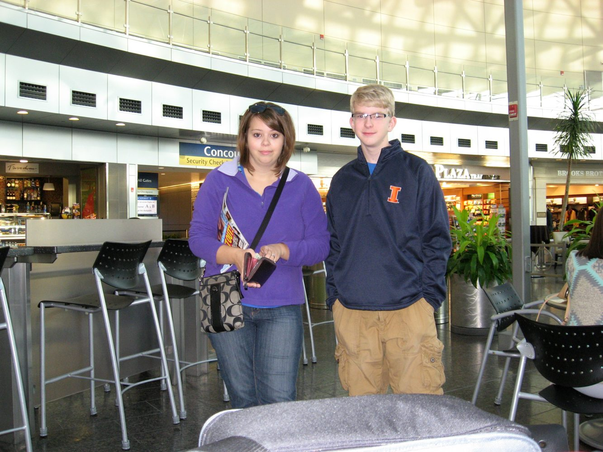
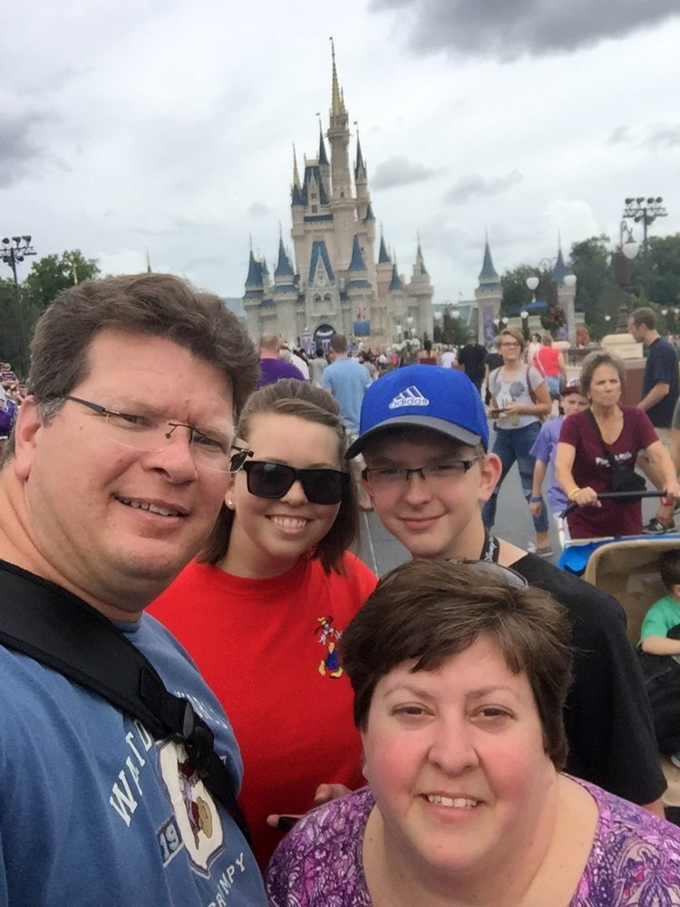

November 2015 - Back after a long break!
Source: disney-november-2015.html
November 2015….......Back after a long break!
Ft Myers and Disney
Nov. 11 - Nov. 21
The trip plans. We hadn't been to Disney in a few years and during that time I had my heart surgery and we all went through a horrible time then, especially me! Truly wondered if we'd ever be able to go back and if I could actually ever handle it. Things were finally back to "normal" or the new normal and one day I woke up and realized my baby was about to be a sophomore in high school! How did that happen? He had been in 7th grade during my surgery and he was still just a kid then but wow has he aged and changed in the years since then.
I thought about how it's been so long since we've had a vacation, I mean the kid was in the 7th grade! And how I want to make some memories with him before he's too old to want to do it because boys aren't like girls and I'm sure he won't want to still be joining us in his mid 20's. I didn't think about Disney at 1st I just thought of a summer trip maybe to Branson because it's not too far away and I was worried about driving clear to Florida due to both leg swelling, water pills and blood clots and we've never been. I started looking into that but with the hotel, meals and entertainment for this 4 night 5-day trip it was going to cost almost $1,000! For BRANSON? Plus, there was the fact that no one really seemed interested in it AT ALL. Alan and Owen were not excited and I spoke to Olivia about it and she had said she'd go with us but it wasn't exactly somewhere we were all dying to go to.

Then I saw that Disney had released free dining for November! I thought to myself if I can come up with a $1,000 for Branson in the summer then I can come up with enough by November and we could just do that instead. Alan and Owen were much happier about that idea. As a matter of fact, Owen was the happiest and most excited as I'd seen him in a long time. The problem with Olivia was in the summer she's available to go but during the school year she may have a teaching job by then which means she wouldn't be able to go with us. I felt bad about this mostly for Owen because since she'd moved out which was about one year ago from when I was doing all this thinking he's really been missing her. Plus, it's got to be weird to take a family vacation without your sibling and be the only child.
I explained to Owen that it will just be the three of us and he said that it won't be nearly as much fun without her but it would still be fun and he still wanted to go.
I booked the free dining and all you have to do is put down a $200 deposit and can cancel up to 30 days before with no penalty and after that 30 mark all you forfeit is the $200. I was nervous about cancelation policies because of all the heart stuff I still had going on. Then Alan and I talked about how much we did NOT want to drive 18 hours! I also worried about how I would handle that with swelling and worry of blood clot issues. So, then we decided to get the Southwest card that gives you 50,000 frequent flier miles and this would cover our flights! All it costs is a $69.00 fee to join it. And $69.00 for free flights seemed like a good idea. We were excited about that.
So as summer kept ticking along and it looked more and more like Olivia wasn't going to have a teaching job for the fall so her and I discussed her coming with us. And by late August we were positive enough that we booked her flights too. We had enough points left over to cover one way of her flight and she paid for the other one-way ticket. We had been keeping it to ourselves about Olivia possibly going until now we didn't want Owen to get excited and then have it fall through. She did end up getting a long term sub job that started at the beginning of the year for 4 weeks which then got switched to another classroom and it was unknown how long that 2nd one would last. They just kept extending it week by week. It turned out to last 8 weeks and the teacher was coming back that week we were going to be leaving.
Ok so that's how the trip came to be.

Also, we had some Sheraton hotel points we needed to use or loose. They emailed us we would be losing by the end of the year if we didn't use them up. It had a been a long time since Alan had traveled and stayed at a Sheraton. So, I thought well if we're using all those points to fly all the way to Florida we may as well make the most of it and add a couple days at the beach. Plus, Alan had been dying to go back to the beach also.
Veterans Day was on the Wednesday before we started our week at Disney so there would be no school. (There turned out to be a surprise no school day on that Friday too because our volleyball team went to state and they called off school!)
So those would be the days we could travel to the beach, Wed, Thur, Fri. and ONE of the things I LOVE about Southwest is you can make changes on your FF tickets with no fees! (or cancel if you need to) So we changed the days we were leaving. Finding the hotel was difficult because we wanted to go to the Clearwater area but there was nowhere that would take the amount of points we had. Instead, I found a hotel in Ft Myers that we could stay at with our points. This also added the drama of do we fly into Orlando, Tampa or Ft Myers! Jeez! Well, it turned out that the rental cars in Ft Myers were a lot more expensive and even when I figured in the gas, we'd save driving down from one of the other airports it was still too much for the rental car. We ended up choosing to fly into Tampa because it took the least amount of points and had the cheapest rental car deal.
Plans were set!
But I'm still not done and ready to start the actual trip yet. First of all, I had to learn all about this new thing called Fast Pass Plus. Yes, we'd used the old fast pass system for years and years but this was a whole different thing! Who knew that adding a little + sign would screw everything up so much! But with this new system you have to pick which 3 rides you want to ride on each of your days 60 (SIXTY!) days before your trip. And not just which rides but the actual time you will be riding those 3 rides!

This new system had been around for maybe a year or so now but I had not read anything good about it. I also didn't actually know too much about it either because every time I would see someone post something negative about it, I would think to myself surely Disney will come to their senses and switch back to the old way before I ever get to go back again. So, I wasn't wasting my time learning the ins and outs of it because it will never last! Well then, I saw that they had literally removed the old fast pass machines from the park so I gave up that hope and had to figure out the new system!
At midnight exactly 60 days before our Disney arrival I had to log on to their website and book these rides starting at 12:01am! And this is what everyone else does too so I'm not just a crazy person! Well, I was so nervous about this I had my plans all laid out and my backup plans too in case the stuff I want won't work. And after I booked the 1st day (you have to do each day individually) the website went down! Seriously can't make this crap up. I freaked out and started to cry (again seriously!) because I thought it was just happening to me but then I looked on one of my message boards and found out that it wasn't just ME that couldn't book no one else could either. Well, this was a huge relief because if it was working for everyone else, they would have gotten all the good ride times. But while this was still irritating at least I wasn't missing out. So, I waited and so did everyone else and then an hour and a half later at 1:30am it came up and started working!! The excitement of it finally working woke me up a bit and then around 2:15am or so I was done! And so far, I am not liking this new FP+ stuff at all!!
There was so much drama involved in planning these ride times and I stressed over it so much that at one point I was complaining to Alan and he said screw it just don't book any and we'll just wing it! OMG he's lost his mind! I said that will NOT be a good idea because then we won't get to ride on anything. So, I stopped talking to him about it. Maybe that was his plan all along. Lol.
The other thing that drove me crazy during the planning was booking the meals. Some of these reservations were very hard to get and there was a new one in the Magic Kingdom at the Beasts castle called Be Our Guest and Olivia REALLY wanted to eat there. It's the only place at Disney where you can meet the Beast and he's been her favorite since she was 3. Oh, and he's only there for dinner. Well, I managed to get a lunch booked there and eventually even got a breakfast for early in the morning before the park even opens booked too. Which means we get to go in early, eat and then before the park opens, we get to ride the new 7 dwarf's coaster which we've never been on before. So that was a pretty big deal. As a matter of fact, Owen helped me get that reservation because I had to sit at the webpage and just keep refreshing it until something for 8am opened up but after an hour of doing it I had to go start dinner so I put him in charge of just hitting refresh over and over and we eventually got it.
But that was breakfast and lunch however and the illusive dinner with the Beast was still not happening. I finally gave in and paid $5.99 to some stupid website that basically sits and refreshes and tries to find a reservation for you within an hour of your preferred day/time. Once they see your time open, they send you a text alert and you have to log in and grab it before someone else does. They do not book it for you. Well after about a week I hadn't gotten any text alerts and started to think I hadn't signed up correctly. But eventually one night we were at the dinner table and eating hamburgers when my text alert went off and I literally threw my burger in the air, jumped up logged in faster than lightening and it was already GONE!! There was no way I could have been any faster! I'm not sure how much longer it took maybe days maybe another week but eventually it happened again and I GOT IT!!! And the best part is it's on our last night!! PERFECT!! There are no words to express how excited I was! SO EXCITED! I called lib and told her and I screamed and jumped up and down. At this point it had just become a mission that I must accomplish and I thought I sure hope this dinner is worth all this! (we'll see!)

Ok I think that's it for the pre-trip stuff that took forever but it was a lot of new stuff. Flights, flight changes, where to fly into, finding hotel with points, will Olivia go or won't she, learn about FP+, booking FP+, fight to make dining reservations. Lots of drama!
Tuesday November 10th
This was a regular school and work day. Owen got home at 3pm with his makeup work for the trip which ended up just being math only! He went to the other room and got started on it so he doesn't have to do it all on the trip. Olivia finished her last day of subbing for Mrs. Sims and is not coming to our house until 5pm because she has last minute stuff to do.
About 4:45 mom and dad walked over to visit and say goodbye then at 5 Olivia called and was dropping her car off to get worked on while we're gone so I met her there and brought her to our house. Alan got home at his regular time of 5:30 and started questioning why I am still packing stuff. Well Olivia had brought some stuff that we squeezed into other bags and I was still packing camera stuff etc. He got changed and then started throwing things in the car like the house was on fire. It was starting to tick me off and everyone could see that except him. Mom and dad left because they could sense it might get ugly in a minute.
Anyway, we piled in the van and pulled out at 5:55 which is five whole minutes ahead of schedule so I don't know what his hurry was! LOL. Then we had to stop at McDonalds to get him a coke for his headache and Olivia had to have one too. Owen paid!!! HA! That is hilarious and I have no idea why he paid but it's in my notes.

We were heading out of town at 6 and headed to Indy. I think in all my planning talk I forgot to write that we are flying out of Indianapolis for the 1st time ever!! It's a 3-hour drive instead of 2 but the FF points required were much lower so an hour is no big deal! HA!


